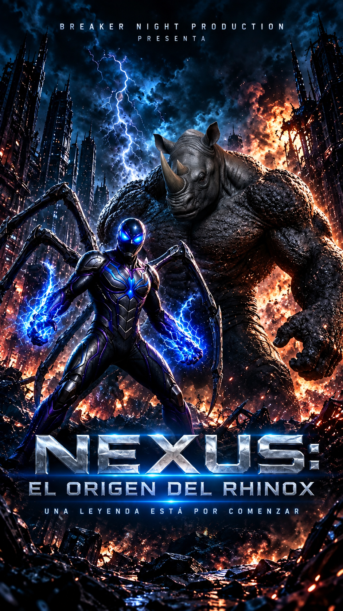
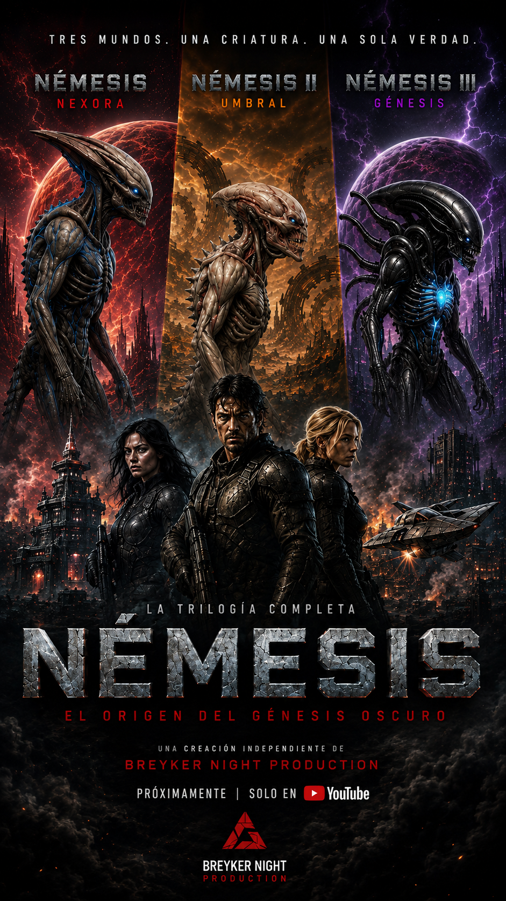
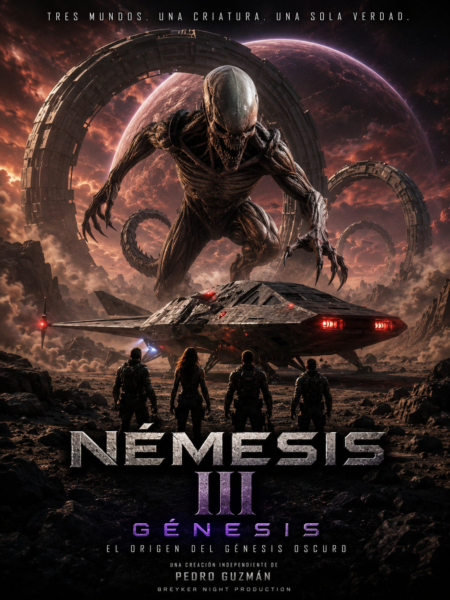

PELÍCULA · ORIGINAL

Nexus: El origen de Rhinox
Una historia de origen dentro del universo de Némesis. Uno de los proyectos con mayor alcance del canal.
Ver en YouTube →Portfolio de Pedro Guzmán. Proyectos audiovisuales creados de forma independiente, combinando narrativa, dirección, montaje e inteligencia artificial para construir nuevas historias.
Una selección de trabajos que representa la evolución del proyecto audiovisual y sus diferentes universos.

Una historia de origen dentro del universo de Némesis. Uno de los proyectos con mayor alcance del canal.
Ver en YouTube →
Nexora · Umbral · Génesis. Tres capítulos reunidos en una única película con continuidad narrativa.
Ver en YouTube →
Reinterpretación medieval con una historia propia. Presentada al festival de Valladolid.
Proyecto destacado →
El origen del Génesis Oscuro y una nueva etapa del universo de Némesis.
Ver proyecto →
Reinterpretación cinematográfica inspirada en el universo clásico de D'Artacán y los tres mosqueperros.
Ver proyecto →Una aventura independiente inspirada en el imaginario de las grandes historias de piratas.
Ver proyecto →Un recorrido desde los primeros experimentos con inteligencia artificial hasta la creación de universos y películas propias.
Primeros experimentos audiovisuales con IA, recreaciones y clips de acción. Uno de los primeros Shorts alcanzó alrededor de 30.000 visualizaciones.
El Equipo A, El Coche Fantástico, Starsky y Hutch, Venom y A todo gas, entre otros proyectos y pruebas narrativas.
La experimentación se convierte en una película de mayor duración, con identidad visual y narrativa propia.
Creación y expansión de un universo de ciencia ficción y horror con personajes, criaturas y diferentes capítulos.
Nueva película independiente centrada en Valeria y el nacimiento de una protagonista con una historia propia y realista.
Soy Pedro Guzmán, creador audiovisual independiente, director y guionista. Desarrollo mis proyectos de principio a fin, utilizando herramientas digitales e inteligencia artificial como parte del proceso creativo.
Mi objetivo es contar historias, experimentar con nuevas formas de producción y construir universos audiovisuales que puedan seguir creciendo.
Una nueva historia independiente. Valeria, una periodista, se enfrenta a un acontecimiento que cambiará su vida para siempre.
Para conocer los proyectos publicados y las novedades de Breaker Night Production: